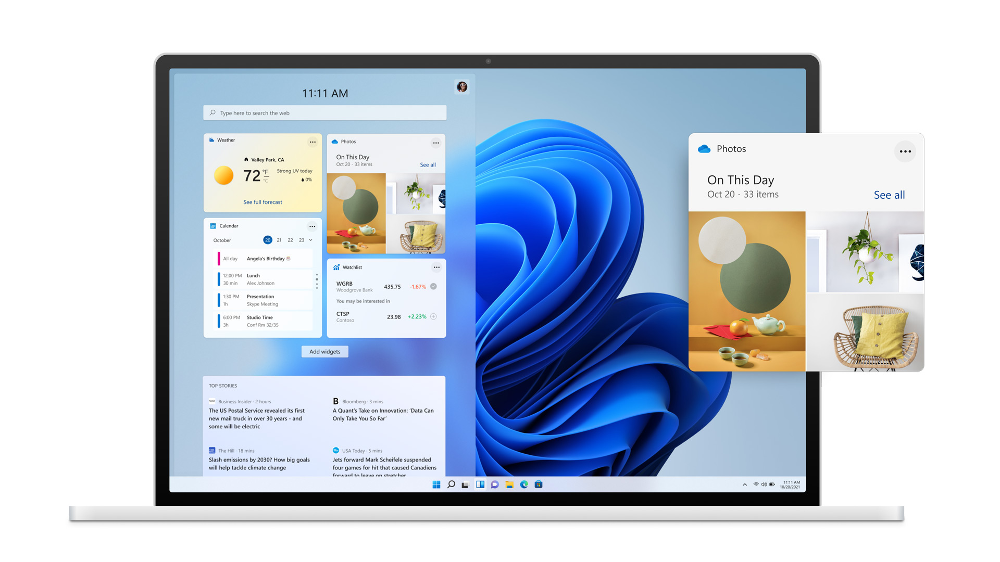
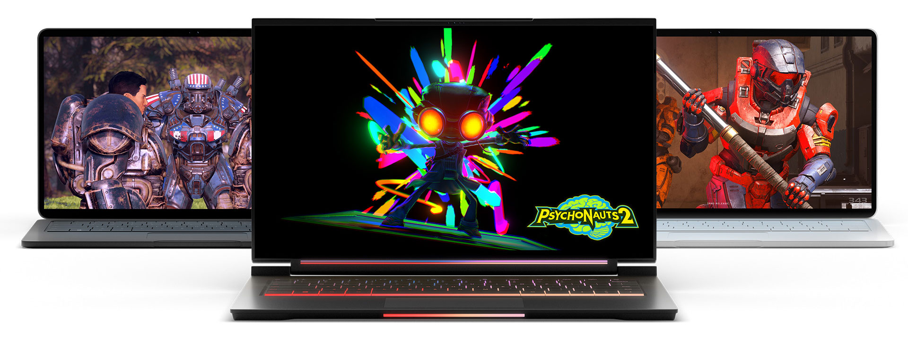

全新推出 Windows 11
全新 Windows 体验，让您与热爱的人和事物离得更近。
获得全新视角
Windows 11 提供一个让人平静而富有创意的空间，全新体验引导您全力追逐热爱。从焕然一新的开始菜单，到与您关心的人、关注的消息、游戏和内容建立连接的新方式，Windows 11 提供了一个场所，让您得以自由地思索、表达和创造。
最大化生产力
利用贴靠布局等工具、桌面以及更为直观的全新体验轻松访问所有应用以及进行多任务处理。
新的连接方式
使用 Microsoft Teams，直接从桌面即可立即连接到您想要联系的人。免费通话或聊天 — 无论对方使用什么设备1。
您的内容，您来组织。
借助 Microsoft Edge 和可选择使用的众多小组件，您可以快速及时地了解您最关心的资讯、信息和娱乐内容2。在新版 Microsoft Store 中轻松找到您所需的应用和爱看的节目。

游戏时间，随时随地。
全新 Windows 提供出色的游戏体验，可畅玩众多游戏大作。

适合每个人的电脑
全新 Windows 可在相当广泛的设备上运行，同时我们的合作伙伴也在致力于在触控功能、触控笔和语音等方面为您带来创新技术，让您轻松找到对您而言理想而又经济实惠的设备4。
找到适合您的电脑
现在需要新电脑？这里是当 Windows 11 推出时可以免费升级的一些 Windows 10 电脑4 5。
将您的文件和照片从旧电脑上备份到 OneDrive，那么在转移到新电脑时就会容易得多7。
购买电脑 >
关注最新动态
订阅我们的新闻稿，及时了解有关 Windows 11 的信息。
注册 >